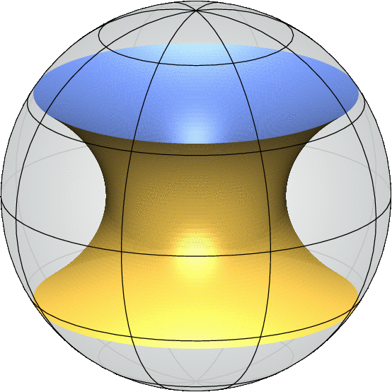

The critical catenoid has Morse index equal to 4.
References
- H. Tran, Index characterization for free boundary minimal surfaces, Comm. Anal. Geom. 28 (2020), 189–222.
- G. Smith and D. Zhou, The morse index of the critical catenoid, Geom. Dedicata 201 (2019), 13–19.
- B. Devyver, Index of the critical catenoid, Geom. Dedicata 199 (2019), 355–371.

first eigenvector
second eigenvector
third eigenvector
fourth eigenvector